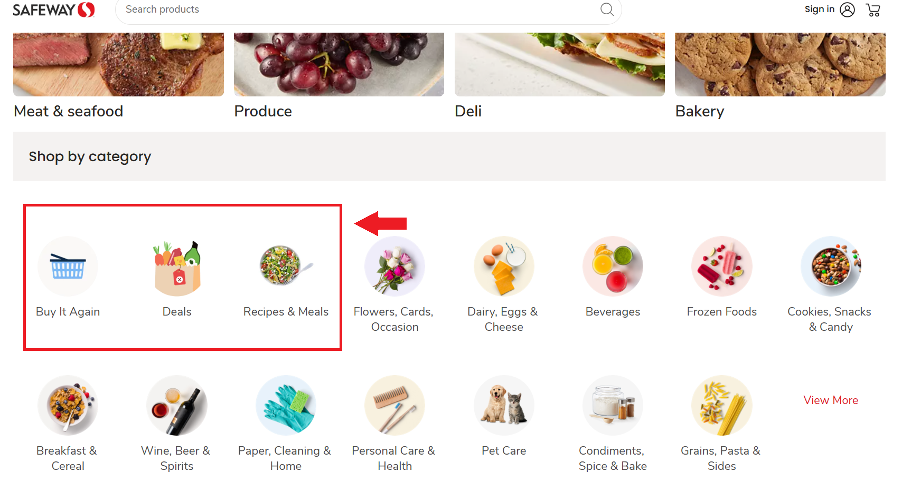
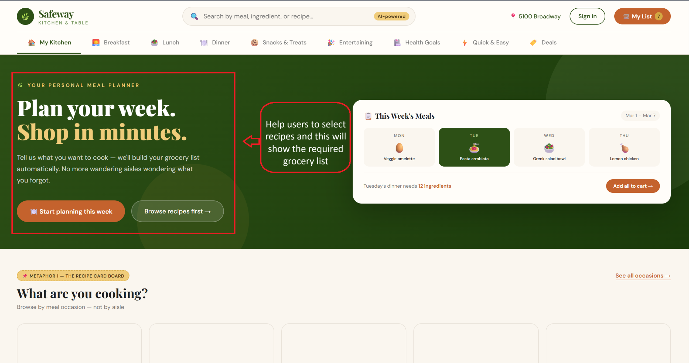
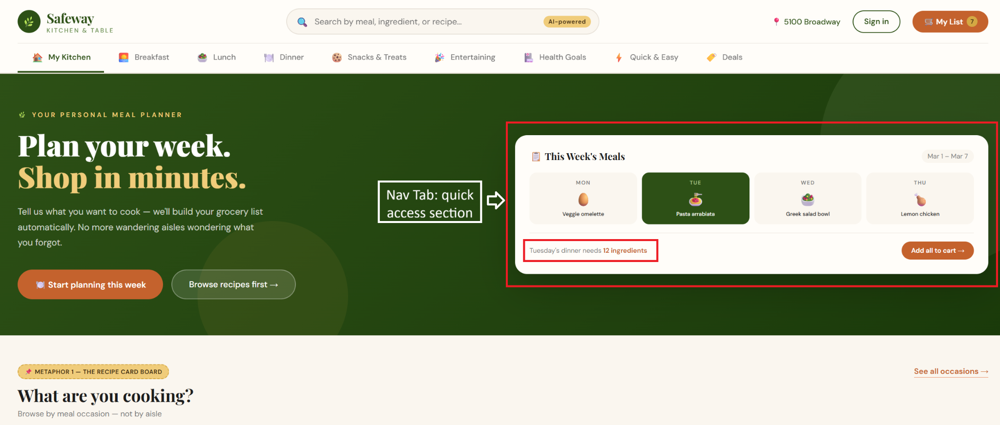
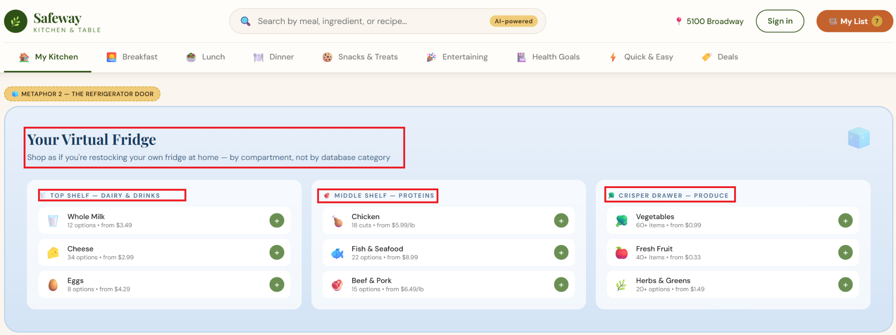
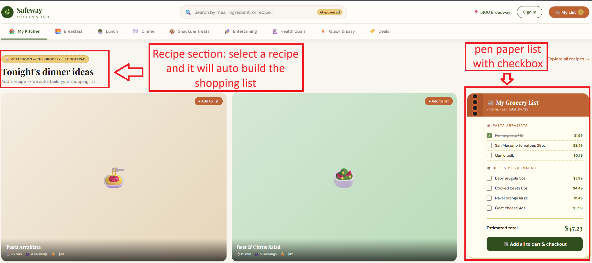
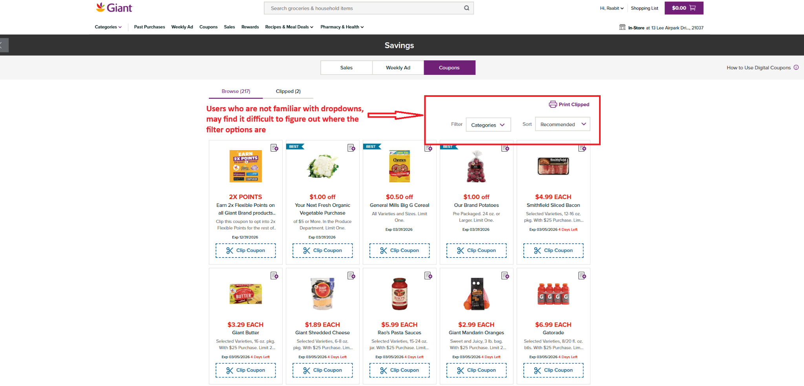
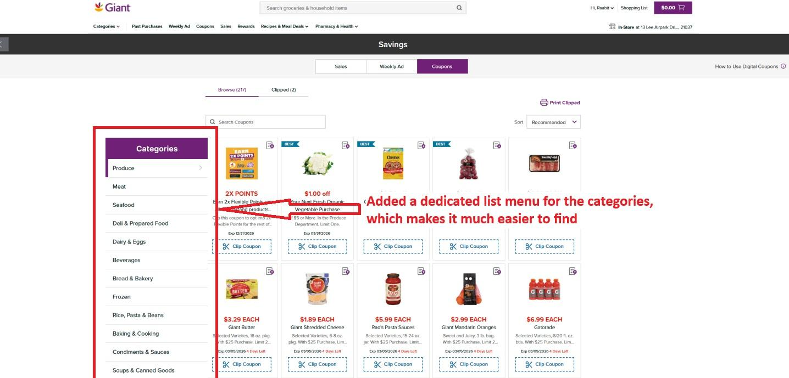

Back to Portfolio
UX Case Study
Safeway Grocery Experience Redesign
A human-centered case study on conceptual models, mental models, interface metaphors, and the gulf of execution.
1. Context
A grocery website is also a planning tool.
Project Overview
Safeway's current website mainly organizes shopping around grocery categories such as produce, meat, bakery, and deals. This case study explores an alternative model where users begin with what they want to cook, then move toward recipes, ingredients, and cart building.
Problem Statement
How might Safeway support users who think in terms of meals and weekly planning, rather than asking them to begin only with product categories?
2. Current Experience
The current model begins with product categories.
The existing experience asks users to navigate grocery aisles digitally. That structure can work for known-item shopping, but it is less direct for people planning meals, comparing recipes, or building a weekly list.

3. User Mental Model
Many shoppers start with meals, not aisles.
A shopper may think, "I am making pasta tonight," or "I need lunches for the week." The redesign uses that planning mindset as the starting point, then connects recipes to ingredients and cart actions.
4. Redesign Direction
From category browsing to meal planning.
The flow shifts from category -> subcategory -> product to intent -> recipe -> ingredients -> cart.

5. Interface Metaphors
Using familiar planning objects to make actions clearer.

Recipe Card Board
Recipe cards make browsing meals feel familiar because users already understand them from cooking and meal planning.

Refrigerator Door
A virtual fridge organizes ingredients in a way that resembles how people already picture food storage at home.

Grocery List Notepad
A notepad with checkboxes maps to how people traditionally prepare shopping lists before going to the store.
6. Design Principles Applied
Principles translated into redesign choices.
Visibility
Issue: Important shopping paths and filters were not always immediately visible when hidden in dropdowns or category menus.
Redesign: We made meal-planning actions, recipe categories, and shopping-list controls visible within the main experience so users could quickly understand where to begin.
Constraints
Issue: Users could face too many choices at once when browsing broad grocery categories.
Redesign: We structured the flow into a clearer sequence: meal occasion -> recipe -> ingredients -> cart. This reduced the number of decisions users had to make at one time.
Feedback
Issue: Users needed clearer confirmation when recipes, ingredients, or coupons were added.
Redesign: We added clear feedback states such as "Added to list," checked items, loading indicators, and confirmation messages so users could understand the result of each action.
Consistency
Issue: Navigation patterns could become confusing when categories, recipes, deals, and cart actions behaved differently.
Redesign: We used consistent cards, buttons, labels, icons, and spacing across meal planning, recipe browsing, and cart sections.
Signifiers / Affordances
Issue: Users might not immediately understand which elements were clickable or interactive.
Redesign: We used visible buttons, hover states, checkbox controls, tabs, and card labels to clearly communicate available actions.
Mapping
Issue: The connection between meal choices, ingredients, and the shopping cart was not always obvious.
Redesign: We placed controls close to the content they affected. Recipe cards were directly connected to ingredient lists and cart actions.
Accessibility / Universal Design
Issue: Users with different abilities could struggle if text was small, contrast was weak, or navigation was not keyboard-friendly.
Redesign: We used readable text, stronger contrast, alt text for images, keyboard-accessible controls, and responsive layouts to support a wider range of users.
7. Gulf of Execution
Making the next action easier to see.
A gulf of execution occurs when users struggle to determine what action to take next. In the coupon section, category filters placed in dropdowns can make filtering less visible and harder to use.


8. Outcome
A clearer bridge between planning and shopping.
The redesigned Safeway experience creates a clearer connection between user goals and interface actions. Instead of forcing users to begin with grocery categories, the new flow supports meal planning, recipe discovery, ingredient selection, and cart building in a more natural sequence.
9. Reflection
What this case study clarified
This case study helped me understand how conceptual models, mental models, metaphors, and gulfs affect interaction design. A grocery website is not only a product catalog; it is part of a user's real-life planning process. Designing around meals instead of only categories can reduce confusion, improve visibility, and make the shopping experience feel more human-centered.